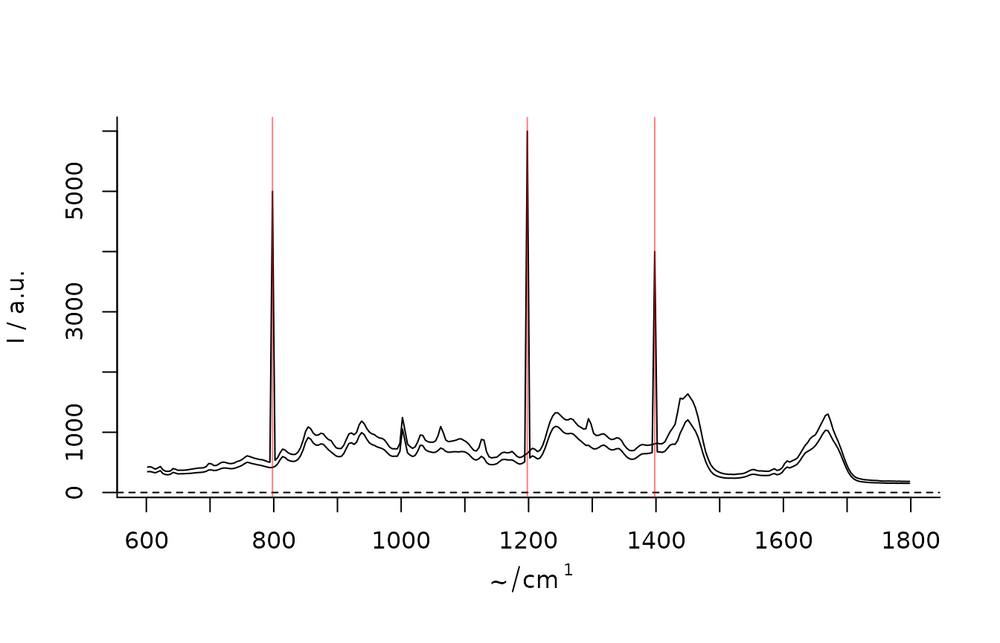

CCD detectors are sensitive to cosmic rays. When acquiring Raman spectra, multiple spurious spikes can therefore appear within a measurement. These artifacts are problematic for further analysis and need to be removed. {hyperSpec.utils} currently includes one very simple implementation by Whitaker and Hayes (2018).
In this vignette, the function is demonstrated on the chondro dataset of the package {hyperSpec}. It does not include any cosmic rays, therefore they are manually introduced at spectra 20 and 50, with one spike around wavenumber 800 for the former and two spikes at wavenumbers 1200 and 1400 at the latter spectrum.
chondro_spike <- chondro chondro_spike[[20, , 800]] <- 5000 chondro_spike[[50, , 1200]] <- 6000 chondro_spike[[50, , 1400]] <- 4000
The function crr() performs cosmic ray removal (as described by Whitaker and Hayes 2018) and returns a hyperSpec object with spikes removed as well as the data variable despiked@data$crr with information on the spike position. Start with higher values for the argument threshold, take a look at the selected spectra and iteratively decrease its value to the smallest value possible with no “normal peaks” removed.
despiked <- crr(chondro_spike, threshold = 10)
We can now find out what spectra contained a spike, at what wavelength they appeared and use this information to visualize the results.
is_spike <- unlist(lapply(despiked$crr, length)) > 0 which(is_spike) #> [1] 20 50 (spike_wavelengths <- despiked$crr[is_spike]) #> [[1]] #> [1] 798 #> #> [[2]] #> [1] 1198 1398 plot(chondro_spike[is_spike,]) abline(v = unlist(spike_wavelengths), col = rgb(1, 0, 0, 0.5))

Using Raman Maps it can also be interesting to see where the identified pixels are on the map.
Whitaker, Darren A., and Kevin Hayes. 2018. “A Simple Algorithm for Despiking Raman Spectra.” Chemometrics and Intelligent Laboratory Systems 179: 82–84. https://doi.org/10.1016/j.chemolab.2018.06.009.